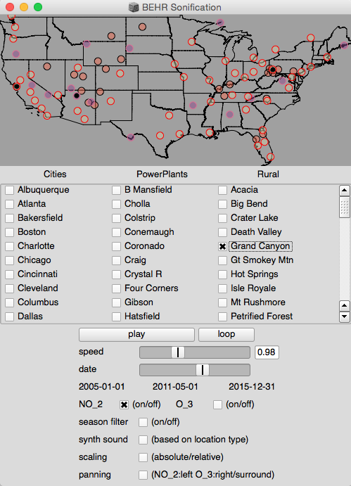

Illustrating trends in nitrogen oxides across the United States using sonification
| Josh L. Laughner | Elliot K. Canfield-Dafilou |
| Department of Chemistry University of California, Berkeley |
Center for Computer Research in Music and Acoustics Stanford University |


|
|
NO2 and O3
Outline
- Motivation: Educational Tool
to Learn About Atmospheric Chemistry - Data Capture or Preperation Methods
- Sonification Methods
- Listening Test Results
- Demo
Why is NO2 important?
|
 |
- It also produces ozone (O3) which causes respiratory distress and harms plants
 |
 |
Where does NO2 come from?
Vehicles  |
Power Plants  |
Wildfires  |
Lightning  |
How is NO2 measured from space?
|
|
 |
 |
Data preprocessing
| One day's observations are incomplete because clouds block our view | Averaging over 1 month gives a complete map |
 |
 |
Data preprocessing
| Finally, column densities from each site are averaged within a radius around each site; this is done for each month to generate the trend |
 |
Sonification
GUI
Trends